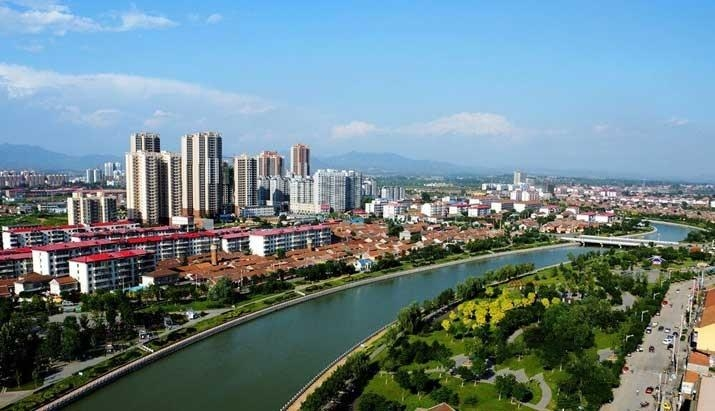
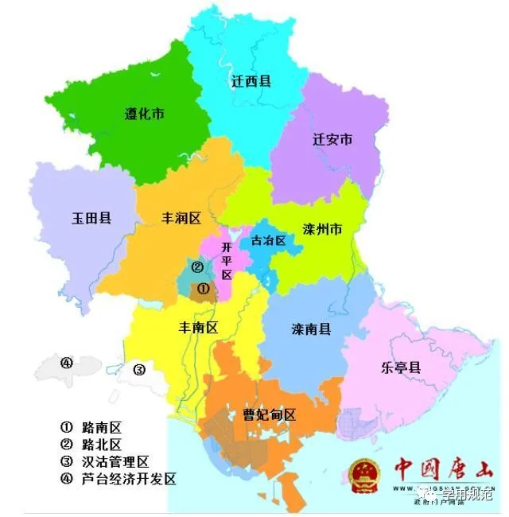

唐山的名字起源于古代，据考古发掘和文献记载，可以追溯到数千年前的夏、商、周时期。关于唐山名字的由来，有着许多版本。 一种说法是唐山得名于唐朝，唐山原名阜安县，取“阜”取“丰饶”之意，“安”寓“祥和”之意，所以因得解还“丰衍祥和之感”，后来县名改为唐山，从而以唐山为名称。 唐山在唐朝时期为卫州益州和碣石县所辖，在宋、元、明、清时期则一直为丰润县的一部分。直至20世纪初，唐山县升格为唐山市。
另一个说法是唐山得名于唐国公安，毛万春在《河北通史》中提到，“县名唐山，北京西南行百里，汴京东南至一百八十五里，唐国公安而名。” 再有一种说法是源于唐山的地理环境。 唐山位于河北省中部沿海地区，地处冀鲁豫三省（区）交界处，地势平坦，属华北平原。 四面环海，城区狭长，东接滦州市，南通饶阳区，倚山依海，海阔山高。因其地理位置处于唐朝辖区，故得名唐山。
月季花，俗名为月月花、月月红、玫瑰、月季[1]，是蔷薇科蔷薇属植物，被称为“花中皇后”。 月季花性喜温暖、日照充足、空气流通的环境。高1-2米，小枝粗壮，圆柱形，有短粗的钩状皮刺，先端长渐尖或渐尖，基部近圆形或宽楔形，边缘有锐锯齿。
槐，又称国槐，豆科蝶形花科植物是是落叶乔木。槐树皮灰褐色县纵裂纹。当年生枝绿色无毛，羽状复叶长达25厘米圆锥花序。 顶生常呈金字塔形，长达30厘米，花梗比花蕊短，花冠白色或淡黄色，子房近无毛，荚果串珠状，种子间缢缩不明显，种子排列较紧密。
唐山地处渤海湾中心地带，位于河北省东部，东隔滦河与秦皇岛市相望，西与天津市毗邻，南临渤海，北依燕山隔长城与承德市相望。
介于东经117°31’—119°19’，北纬38°55’—40°28’之间，东西长约130千米，南北宽约150千米，总面积为13472平方千米。
东至秦皇岛125千米，南距渤海40千米，西南至天津108千米，至省会石家庄366千米，西北至北京154千米。
唐山市境内地貌可分为燕山山地丘陵区与滦河平原区两大地貌区。
内陆 唐山市位居燕山南麓，地势北高南低，自西、西北向东及东南趋向平缓，直至沿海。北部和东北部多山，海拔在300600米之间；中部为燕山山前平原，海拔在50米以下，地势平坦；南部和西部为滨海盐碱地和洼地草泊，海拔在15米至10米以下。唐山境内最高峰是青山关八面峰，海拔842米。
沿海 依据河北省海岸线2008年12月最新修测成果，唐山市大陆海岸线总长229.7千米，东起乐亭县、昌黎县际界线沿河堤，与秦皇岛市接壤，西至涧河口西侧津冀省际北界线， 与天津市相邻。滦河口外、曹妃甸海域共有大小岛屿100多个，岛屿岸线125.7千米，著名的岛屿有祥云岛、月坨岛、菩提岛、龙岛等等。
唐山环城水系长57公里，它连接了陡河，青龙河，李各庄河等多条水系，北起陡河，环城一周，向南汇入南湖，拥有56座桥，16座橡胶闸、坝，滨河景观大道15公里， 绿地350万平方米，蓄水量1948万立方米，市区120平方公里的范围处在滨山区， 使唐山成为城中有山，山水相依，功能齐全，景色怡人的宜居生态城市，工业摇篮，碧海蓝天，唐山欢迎您！
唐山市属于暖温带半湿润季风型大陆性气候区。冬季受极地大陆性气团控制，气候寒冷，雨雪稀少；春季受大陆性变化气团影响，降水不多， 由于偏北或偏西风盛行，蒸发量增大，往往形成干旱天气；夏季由于太平洋副热带高压脊线位置北移，促使西南或东南洋面上暖湿气流向北输送， 成为主要降水季节；秋季东南季风减退，极地大陆气团逐渐加强，逐渐转变为秋高气爽的少雨季节。 全市多年平均气温10、6摄氏度，1月份气温最低，月平均气温负5到负8摄氏度，最低气温可达负26摄氏度；7月份气温最高，月平均气温25到26摄氏度，最高气温40摄氏度。
唐山县原名柏人县，西周时期属邢国，战国属赵，秦汉属巨鹿郡， 公元前206年，登上皇帝宝座的汉高祖国刘帮依秦制划天下，于此地初置柏人城县，隶冀州赵国，北魏改柏人为柏仁，隋朝时柏仁县又属邢州，621年属赵州治，627年复为邢州辖。 唐天宝元年（742年），因遭水患，城被水淹，县治东迁尧城镇，遂更名为尧山县，隶邢州。宋熙宁六年省入内丘县，元祐元年复置。 入金后，尧山县隶河北西路信德府（天会七年降为邢州），于大定中期尧山县改名唐山县。 元代，世祖至元二年（公元1265年）唐山县曾省入内丘县，不久即复设，初属真定路邢州，后属顺德路（中统三年为府，世祖至元二年改路）。明代唐山县隶顺德府。 清因之。民国初，尧山县属直隶省冀南道，三年（公元1913年）改属大名道，十七年（公元1928年）唐山县复名尧山县，直隶于河北省，二十五年（公元1936年）尧山县划归河北省第十三督察区 。1945年邢台市成立，尧山县属之。1947年将隆平、尧山两县合并为隆尧县，属邢台地区，1993年，邢台市县合并为邢台市，隆尧县属之。 唐玄宗天宝元年（742年），柏仁城毁于水，县治东迁于现尧城镇。因去北有山，山以尧名，县以山名，尧山县名便由此而始。 金大定中（1174年），改县名为唐山县。民国17年（1928年）复为尧山县。 1947年8月，隆平县、尧山县合并为隆尧县。1958年，隆尧县与临城、柏乡、内丘合并为内丘县，属邯郸地区行政公署。1961年5月，隆尧、柏乡由内丘县划出，统称隆尧县。 1962年1月，柏乡县析出。隆尧县属邢台地区行政公署辖。1993年改为邢台市辖。从西汉王朝在县域内置县，已经有2200多年的历史了。
唐山市矿产资源品种齐全，已发现并探明储量的矿藏有50余种。 金属矿产: 唐山市蕴藏着丰富的铁矿资源， 其保有量62亿吨，次于鞍山，多于攀枝花， 为国家三大铁矿集中区之一，境内蕴藏着丰富的金矿资源， 主要分布在遵化、迁西两县。金矿开采历史悠久。相传唐代高句丽人就在金厂峪一带挖金 ，清朝末年迁西金厂峪已是国内三大金矿产地之一。已探的唐山地区黄金储量78543公斤。唐山市含锰地层为长城系高于庄组的中下部， 储量达21.37万吨。另外，唐山还有银矿、铜矿、铝土矿、钼矿、锡矿、汞矿等多种金属矿产。 非金属矿产: 唐山地下蕴藏非金属矿主要有石灰岩、白云岩、石英砂岩、耐火粘土、铁矾土、油石、柘榴石、石墨、油泡石粘土等。
唐山市北部山区盛产板栗、核桃、苹果 、红果等干鲜果品；中部平原盛产玉米、小 麦、水稻、花生等农副产品。树木种类有47科、67属、1 33种，果树为8科、12属、22种。野生植物药材隶属123科194种。
唐山市野生兽类有虎、豹、熊、豺、狼、鹿 、狍、猴、兔、獭、野猪 、鼠、黄鼠狼、松鼠、香鼠、刺猬等。随着人类活动范围的扩大 和乱捕、滥猎，野生动物资源遭到破坏，早在二十世纪三四十年代虎、豹、黑熊、鹿 、猴子等野生动物先后绝迹。爬行类以无蹼壁虎分布最广，其次为水塘中的鳖及各种无毒蛇类 ；两栖动物以花背蟾蜍、青蛙为主。唐山地区濒临渤海，河流众多，近水地区森林茂密 ，草木繁盛，不单是多种留鸟的终年栖息地，也是多种候鸟 的中转站，多种鸟类达200多种。唐山市淡水鱼有16科46种属。海洋动物种类也较为丰富。
唐山市共有河流70条，地表水资源量14.62亿立方米，地下水资源量14.35亿立方米，扣除重复计算量，水资源总量为24.16亿立方米，人均329立方米。唐山市沿海陆域海岸线长229.7千米， 滩涂面积125万亩，沿海未利用土地1173平方千米，近海海域面积3492.5平方千米，其中潮间道829.1平方千米，浅海水域2663.4平方千米。
截至2021年1月，宝鸡市辖4个市辖区、8个县，市政府驻地金台区陈仓大道行政中心
人口 唐山市人口以汉族为主，少数民族有满族、回族、壮族、蒙古族等52个。
民族 2022年末全市常住人口770.60万人，比上年末增加0.90万人，其中城镇人口506.98万人，加3.43万人。常住人口城镇化率65.79%，比上年末提高0.37个百分点[3]。

古城唐山 璀璨文明
welcome to tangshan|唐山欢迎您！